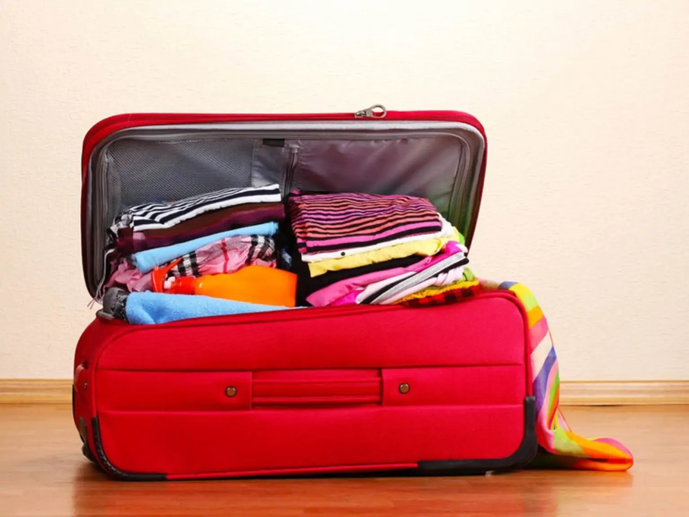
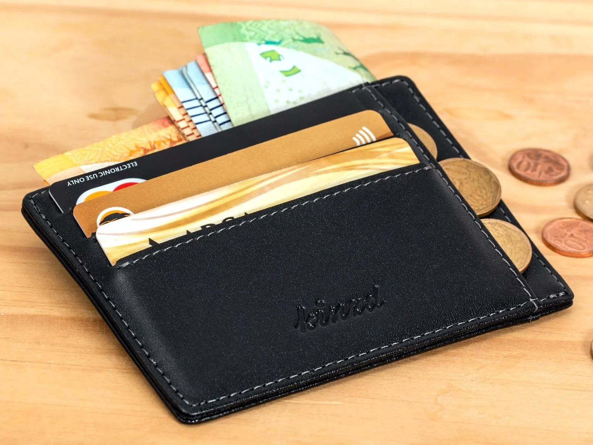
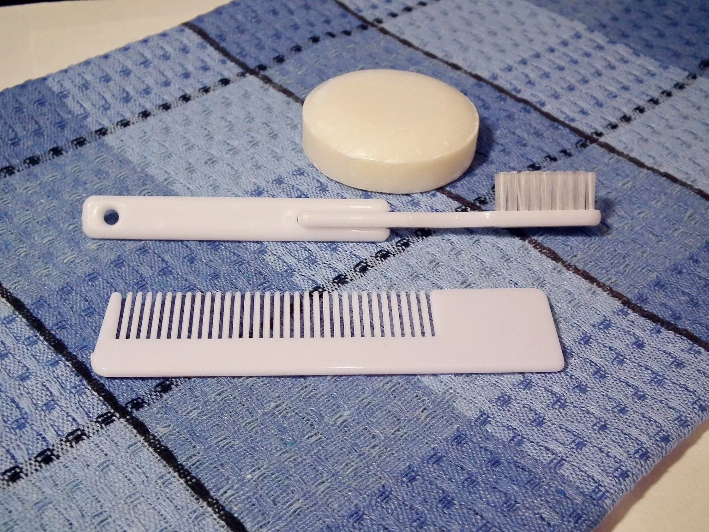
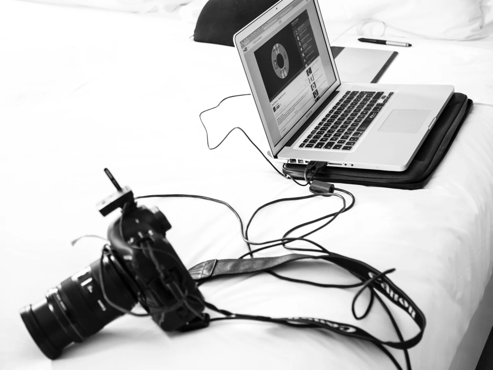
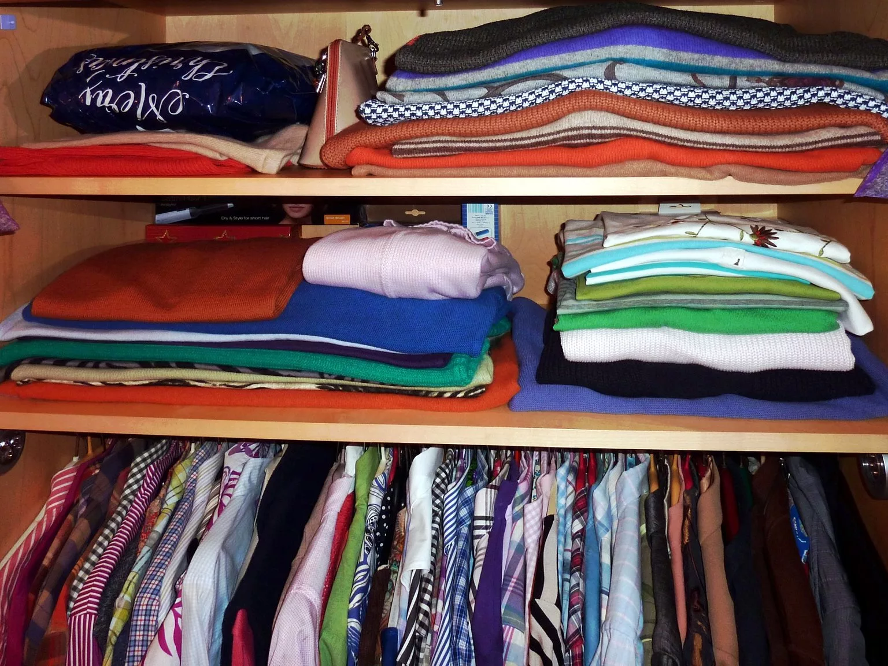

Что взять в поездку: список необходимых вещей и сборы
Мало кто любит собирать чемоданы, даже если предстоит увлекательное путешествие. Составьте список вещей и правильно их упакуйте. Действуйте по плану и тогда вы все успеете и ничего не забудете.
Список необходимых в поездке вещей
Для ведения списков существуют уже готовые интерактивные таблицы с типовыми вариантами, можно составить свою таблицу Excel и сохранить на компьютере или воспользоваться мобильным приложением. Я пишу списки от руки на листе А4, отмечаю собранное плюсиками, ненужное зачеркиваю. Делайте как удобно вам, главное чтобы вы могли не только смотреть на свой список, но и взаимодействовать с ним.
Один раз хорошо составленный список пригодится вам в каждой поездке. У меня есть два базовых списка: летний и зимний, различий в них немного, так как принцип один – все вещи разделяются по категориям.
Документы и деньги
Деньги и документы лучше хранить отдельно. Держите их при себе или в ручной клади, не сдавайте в багаж! Важную информацию (контакты, брони) желательно иметь не только в электронном, но и в бумажном виде.
- Загранпаспорта. Сохраните копии всех паспортов на виртуальном диске (Яндекс, Гугл), можно сделать ксерокопии. Паспорт РФ в зарубежную поездку брать не надо.
- Медицинские страховки (онлайн полис надежнее в электронном виде).
- Авиабилеты. Распечатать посадочные талоны при онлайн регистрации.
- Водительские права, международное водительское удостоверение. Если едете на своей машине: документы на машину, страховка грин карт.
- Брони гостиниц, подтверждения апартаментов и других видов проживания.
- Свои записи: маршрут, телефоны, адреса, контакты.
- Деньги на кредитных картах, наличные в рублях и в валюте. Разделите на несколько частей и положите в разные места.
По теме:
Ручная кладь: что можно и нельзя брать в самолет?Лекарства
При хронических заболеваниях возьмите те лекарства, которые вам прописал врач. Для провоза в ручной клади, желательно, иметь рецепты.
- От головной боли
- Обезболивающие
- От расстройства желудка
- От спазмов
- Аспирин
- Бактерицидный пластырь
- Гигиеническая помада
Предметы личной гигиены
Не стоит брать большие упаковки, они много весят и могут протечь в багаже. Если что-то из моющих принадлежностей закончится, вы всегда купите это на месте.
- Зубные щетки и паста
- Бритва и средства для бритья
- Расческа
- Влажные салфетки и одноразовые платочки
- Шампунь, гель для душа, мыло. Отдавайте предпочтение средствам 2 в 1 и разовым упаковкам. Имейте в виду, что в большинстве отелей все это будет в номере.
- Дезодорант
- Маникюрные принадлежности (пилочка, ножницы). Маникюр-педикюр и другие процедуры сделайте перед поездкой.
- Декоративная косметика. Помада/блеск для губ, устойчивая тушь для ресниц, маленькое зеркальце.
- Заколки, резинки для волос
- Крема, которыми вы пользуетесь в маленьком объеме. Крем от загара.
По теме:
8 полезных вещей в дорогу — из кухни в чемоданТехника
Перед поездкой проверьте и зарядите все устройства, очистите память. Не забудьте взять зарядки, дополнительные батарейки, аккумуляторы и переходники.
- Мобильный телефон. На время поездки установите выгодный тарифный план.
- Фотоаппарат/видеокамера с картой памяти
- Ноутбук, планшет (если они вам нужны)
- Влажные салфетки и одноразовые платочки
- При путешествии на машине навигатор с загруженными картами. Можно заменить планшетом или смартфоном
- Фен (если нет в отеле и вы им пользуетесь)
Одежда
Берите взаимодополняемые вещи: несколько футболок к одним брюкам и шортам. Один головной убор, одну пару уличной обуви, куртку, кофту и т.п. Отдавайте предпочтение удобной одежде, не берите высокие каблуки, вечерние наряды и драгоценности. Оставьте в чемодане место для покупок.
- Несколько смен нижнего белья
- Головной убор по сезону
- Обувь для улицы и домашние тапочки. Не берите новую, ещё не ношенную пару, ей можно натереть ноги. В холодное время года очень важно, чтобы обувь не промокала, обработайте её специальным средством.
- Купальник или плавки для пляжного отдыха, посещения бассейна или сауны
По теме:
Путешествуем без лишних вещейПрочее

Вещи не попадающие под категорию, например:
- Зонтик
- Штопор
- Наручные часы
- Небольшие сувениры для новых друзей
- Путеводитель
- Зубочистки
- Складной ножик
Собираем чемодан

Когда все вещи разложены, можно начинать их собирать. Разделите вещи на 4 части: Разделите вещи на 2 части: то, что будете носить с собой (ручная кладь) и то, что сдадите в багаж.
В ручную кладь надо взять: деньги, документы, технику (телефоны, фотоаппарат, ноутбук и далее по списку, зарядки не надо), самое необходимое из лекарств, средств личной гигиены, блокнот и ручку. Если вы летите самолетом, то в ручной клади не должно быть ничего колюще-режущего и жидкого.
Чемодан никогда не надо забивать до упора. Во-первых, у вас может быть перевес (у большинства авиакомпаний норма провоза одной единицы багажа до 40 кг 20 кг). Во-вторых, вам будет неудобно искать свои вещи или доставать их по просьбе таможенного офицера. В-третьих, у вас не останется места для сувениров и прочих покупок.
Упакуйте все жидкости в плотные пакеты, одежду, обувь и остальное содержимое распределите равномерно, для нижнего белья в большинстве чемоданов есть специальный карман. Многие советуют скручивать одежду в рулоны, я складываю стопкой, заполняя промежутки чулочно-носочными изделиями.Вниз чемодана кладите то, что будете доставать в последнюю очередь. Сверху положите складную сумку, при перевесе в нее можно будет переложить часть вещей, а потом использовать для походов на пляж или по магазинам.
Всегда остаются вещи, которые нужно положить в последний момент: ключи от дома, телефон, еда в дорогу. Пометьте их в своем списке отдельно, чтобы не забыть. Для защиты чемодана от грязи и механических повреждений его можно обмотать пленкой или купить красивый чехол, с ним ваш чемодан будет заметен на багажной ленте.
Возьмите список вещей, по которому вы собирались с собой, он поможет вам ничего не забыть на обратной дороге.